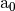

Tutorial for the Integration with Cubature¶
This is an advanced tutorial which shows how to use orbkit together with the Python interface to Cubature to determine the norm of the occupied molecular orbitals of the water molecule in a user-defined volume.
| References: |
|---|
For simplicity, we use the molden file h2o.md as an example. This file can be found in $ORBKITPATH/examples. Moreover, we assume that you have followed the Installation and that you have installed the Python interface to cubature.
Hint
This tutorial explains a part of the example file $ORBKITPATH/examples/interface_to_cubature.py.
Initialization of the Program¶
First, we have to import some modules and set some of orbkits options:
import numpy
from cubature import cubature
import orbkit
# Disable orbkit terminal output for each run
orbkit.options.quiet = True
orbkit.options.no_log = True
# We initialize the grid for orbkit!
orbkit.grid.is_initialized = True
numproc = 4 #: Specifies number of subprocesses.
vector = 1e4 #: Specifies number of points per subprocess.
Then, we have to read the input file:
# Open molden file and read parameters
qc = orbkit.main_read('h2o.md',itype='molden',all_mo=False)
Setting up a Function for Cubature¶
Cubature requires a function with a special structure. It provides a 1d array for the grid which we have bring into orbkit’s shape. Then, we have to call orbkit’s main computational function orbkit.rho_compute with the respective options, i.e., we compute the norm of all occupied molecular orbitals in this example. Finally, we have to reshape orbkit’s output:
def func(x_array,*args):
'''Calls orbkit.
**Parameters:**
x_array : 1-D numpy.ndarray, shape[0]=ndim*npt
Contains the grid.
args : tuple or list
|args[0] : int
| Contains the number of points (npt).
'''
# Set the grid
x_array = x_array.reshape((-1,3))
orbkit.grid.x = numpy.array(x_array[:,0],copy=True)
orbkit.grid.y = numpy.array(x_array[:,1],copy=True)
orbkit.grid.z = numpy.array(x_array[:,2],copy=True)
# Compute the squared molecular orbitals with orbkit
out = orbkit.rho_compute(qc,
calc_mo=True,
vector=vector,
drv=None,
laplacian=False,
numproc=numproc)
out **= 2.
# Return the results
return numpy.reshape(numpy.transpose(out),(-1,))
Note
We only consider the “vectorized” cubature which is much faster than the single point cubature variant.
Run Cubature¶
We integrate in each dimension from -5 to 5  until we reach a relative error of 1e-3 without considering the absolute error of the integral:
ndim = 3 #: Number of dimensions being integrated
xmin = numpy.array([-5.,-5.,-5.],dtype=float) #: Minimum integration limit for each variable
xmax = numpy.array([ 5., 5., 5.],dtype=float) #: Maximum integration limit for each variable
abserr = 0 #: Absolute error: |error| < abserr (If zero, it will be ignored.)
relerr = 1e-3 #: Relative error: |error| < relerr*|integral| (If zero, it will be ignored.)
# Call the cubature routine together with orbkit.
integral_mo,error_mo = cubature(ndim, func, xmin, xmax,
args=[],
adaptive='h', abserr=abserr, relerr=relerr,
norm=0, maxEval=0, vectorized=True)
Finally, we can print the output:
print('The integral of...')
for i,(inte,err) in enumerate(zip(integral_mo,error_mo)):
print('\tMO %s is %.14f. (Error: %.4e)' % (qc.mo_spec[i]['sym'],inte,err))